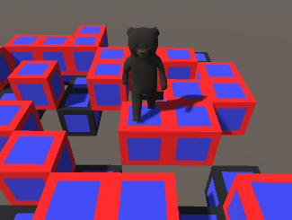

Bear Step

Bear Step is a puzzle game based on the concept
that every move has a direct consequence. The player controls
a teddy bear navigating through a 3d grid to collect memory
orbs. The underlying story is inspired by the tales of lost children.
Links:
Prototype
GitHub